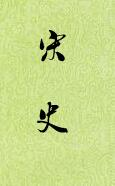

| 历史史籍 > |
| 宋史 |
| 作者：脱脱 主编 |
|
宋史，本纪47卷、志162卷、表32卷、列传255卷，共496卷，是二十四史中最庞大的一部史书。元顺帝至正三年（1343）三月，由丞相脱脱奉诏主持修撰。铁木儿塔识、贺惟一、张起岩、欧阳玄等七人任总裁官，斡玉伦徒、泰不华、于文传、贡师道、余阙、贾鲁、危素等23人参修。脱脱于至正四年五月辞职，中书右丞相阿鲁图继任，阿鲁图虽名为都总裁，但不谙汉字。至正五年十月成书，只用了两年半的时间。至正六年在江浙行省予以刊刻。 《宋史》共有15志，约占全书三分之一，仅次于《列传》。《职官志》、《食货志》、《兵志》等编述之详，为二十四史所仅见。《宋史》的特点是史料丰富，叙事详尽；但由于成书时间短，对史料缺乏认真鉴别考订，编纂得比较粗糙。 [2019-2-6，重新整理] |
 |